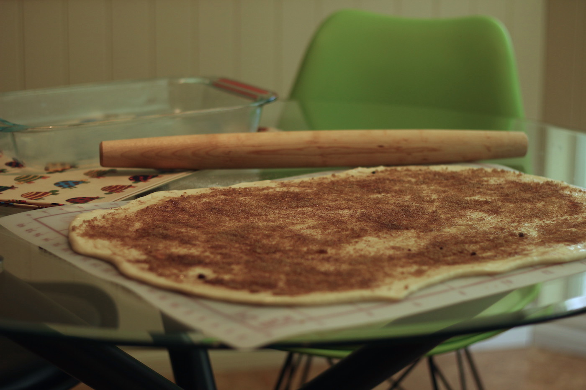
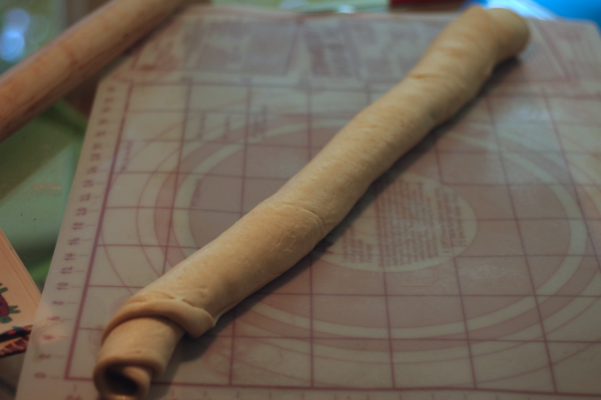
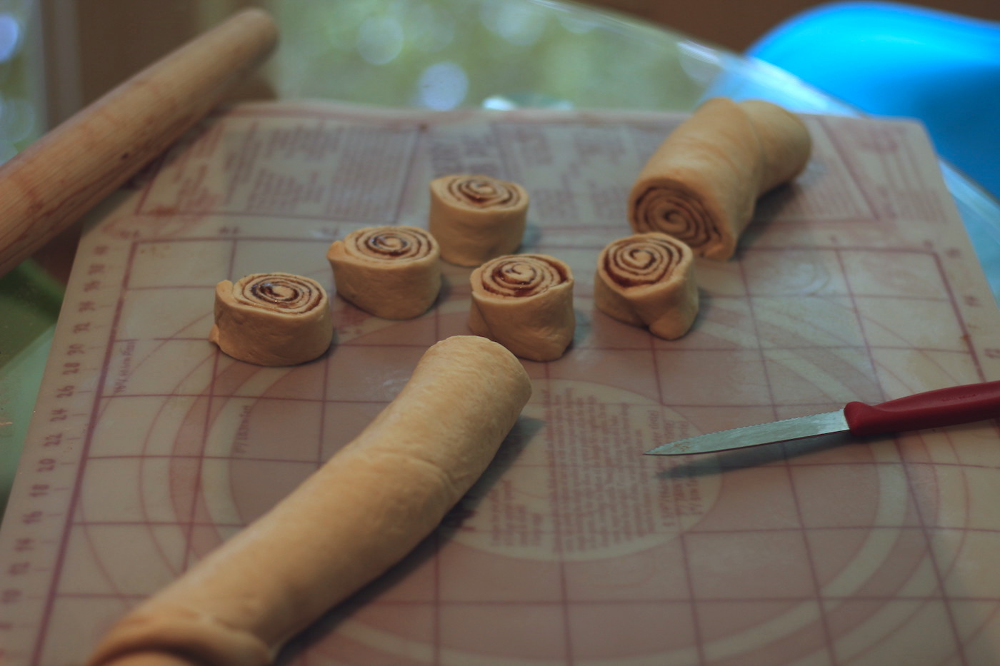
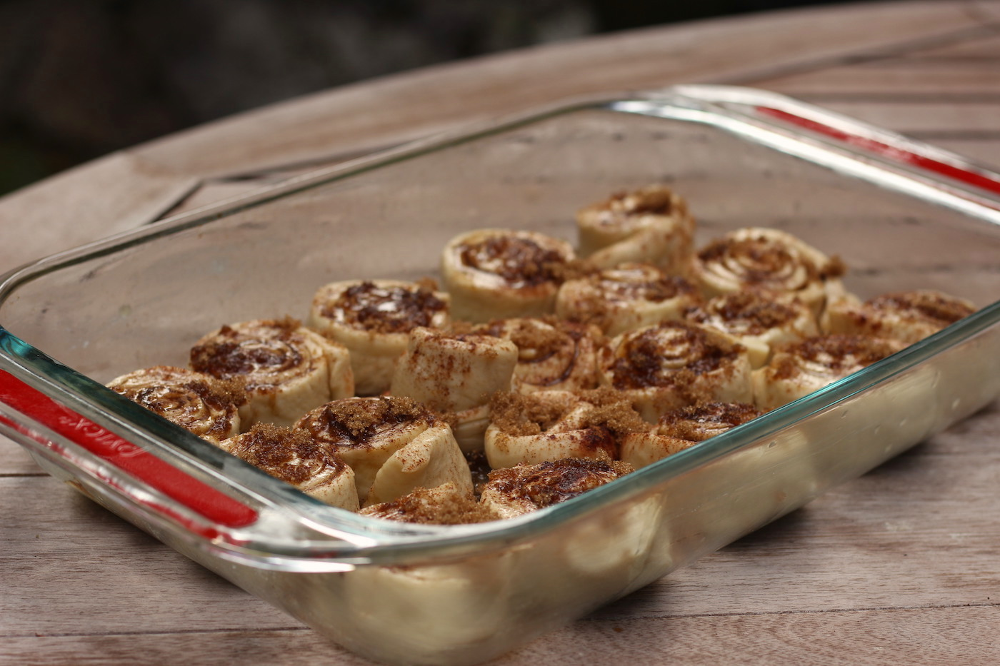

Description
One of my favourite baked goods. They make a lovely treat for brunch.
Ingredients (Dough)
- 1 Cup Almond Milk1
- 1/4 Cup Vegan Yogurt2
- 3 Cups All Purpose Flour
- 3 Tbsp Sugar
- 1/2 Tsp Salt
- 4 Tbsp Vegan Butter
- 1 1/2 Tsp Active Dry Yeast or Fast Rise Yeast
Ingredients (Filling / Topping)
- Ground Cinnamon
- Brown Sugar
- Melted Vegan Butter
- Coconut Oil (to grease baking dish)
Instructions
If you have a bread machine…
If you have a bread machine you can load it with the dough ingredients and set your machine to its ‘dough’ mode. Your dough will be ready in about 1 1/2 to 2 hours depending on your machine. If you are using a bread machine please use ‘Fast Rise Yeast’.
Don’t have a bread maker? Follow these steps!
- Warm almond milk in a small pot on your stove.
- While almond milk is warming, add yeast and sugar to your stand mixer or large mixing bowl.
- Once almond milk is warm, add it to the yeast and sugar mixture. Give it a few stirs and let it sit for 5 minutes to activate the yeast.
- Once your mixture is looking frothy, add melted vegan butter, vegan yogurt, flour, and salt.
- Mix / knead ingredients until bowl is clean. Approximately 5-10 minutes.
- Once the dough is kneaded, place it in a bowl that is greased with vegan butter and cover it. I use a bowl that has a lid. A kitchen towel, or saran wrap would also work.
- Let dough rise for 1 1/2 to 2 hours.
Once your dough is ready…
- Roll out dough into a large rectangle on a lightly floured surface.
- Cover dough with melted vegan butter, brown sugar and cinnamon. 
- Roll dough into a long tube.
- Use a knife to slice tube into evenly sized cinnamon rolls. 
- Grease baking dish with coconut oil.
- Place cinnamon rolls in baking dish. Cover them with melted vegan butter, cinnamon, and sugar. 
- Cover dish with a towel and let buns rise for 30 minutes.
- Preheat oven to 375 degrees Fahrenheit.
- Bake buns until nicely browned. Approximately 20-30 minutes.
- Let cinnamon buns cool, then remove from pan and enjoy!
-
I like to use Califia Unsweetened Almond for baking as it lacks fortification. In my experience, fortified milks can impact the baking chemistry and yield unpredictable results. That being said, any plant milk should work. I have also successfully used Earth’s Own Oat Milk for this recipe in the past. ↩
-
Vegan Yogurt makes a great egg substitute. It is my go to replacement for recipes like this. I use Riviera: Coconut Milk Vegan, Plain for baking. ↩